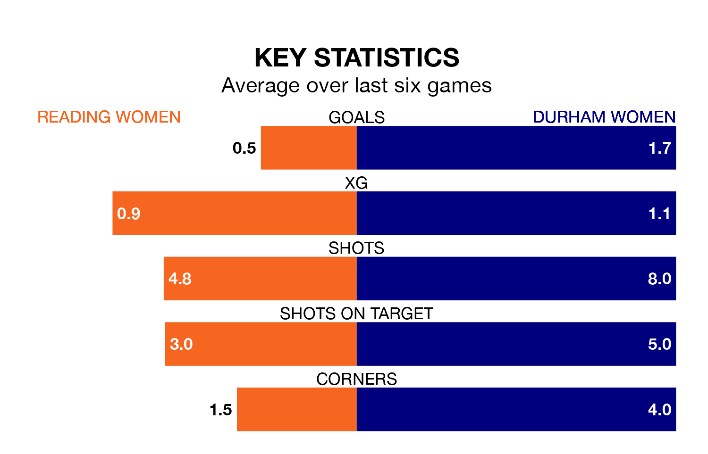

Sunday lunchtime's match at the Select Car Leasing Stadium sees two relegation candidates play each other, as 10th-ranked Reading Women host ninth-placed Durham Women.
Reading have picked up 19 points from their first 19 FA Women's Championship games, with four wins and seven draws.
That is one point less than Durham have collected, having won five and drawn five.
Reading are in bad form in the FA Women's Championship, with one win and a draw from their last six games.
But with no wins and two draws over that period, Durham's form is even worse – they have taken two points from 18, compared to the Royals's four.
With 17 goals in 20 games so far this season, the hosts are the league's lowest scorers with 0.8 goals per game. And they are conceding more than average, letting in 37 goals at a rate of 1.9 per game.
The away side are also below average scorers, with 1.1 goals per game, compared to a league average of 1.4. They have conceded 2.1 goals per game.
With Emily Orman between the sticks, Reading can rely on one of the league's safest pair of hands. She has kept six clean sheets in her 17 appearances this season in the FA Women's Championship.
In Durham's net, Naoisha McAloon has two clean sheets in 10 games. She has conceded a goal every 36 minutes, 40% more often than the 51 minutes between goals for Orman.
Reading's last match was on Sunday, a 0-0 draw against Blackburn Rovers Women.
Durham lost 5-1 against Crystal Palace Women last time out, on March 31, with Amy Andrews on the scoresheet.
Updated: 11:31 (UTC), 15/04/24